REGISTER / 12 FIGURES
DETAIL · ASSEMBLY · CONCEPT
Drawings + Misc.
Detail and assembly drawings, manufacturing concepts, and hand-worked engineering sketches.
FIG. 04 / TECHNICAL REGISTERDRAWINGS + MISC.
12 / 12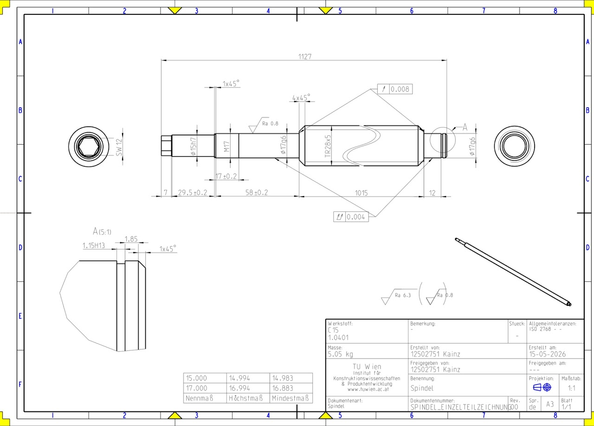
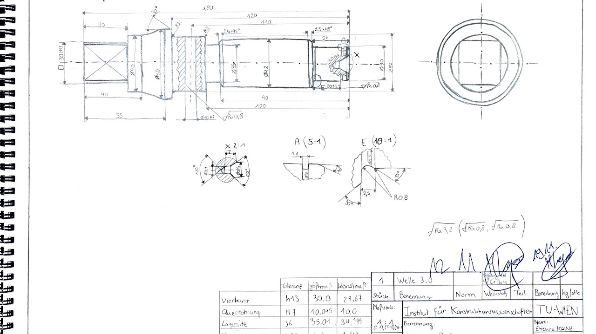
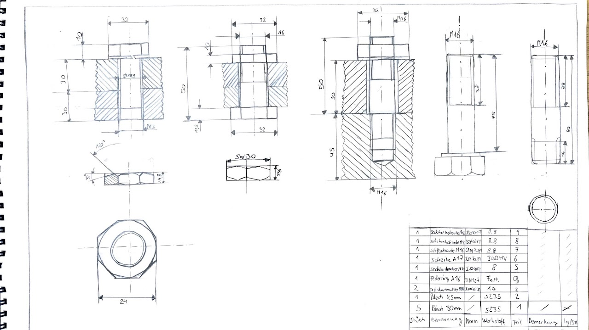
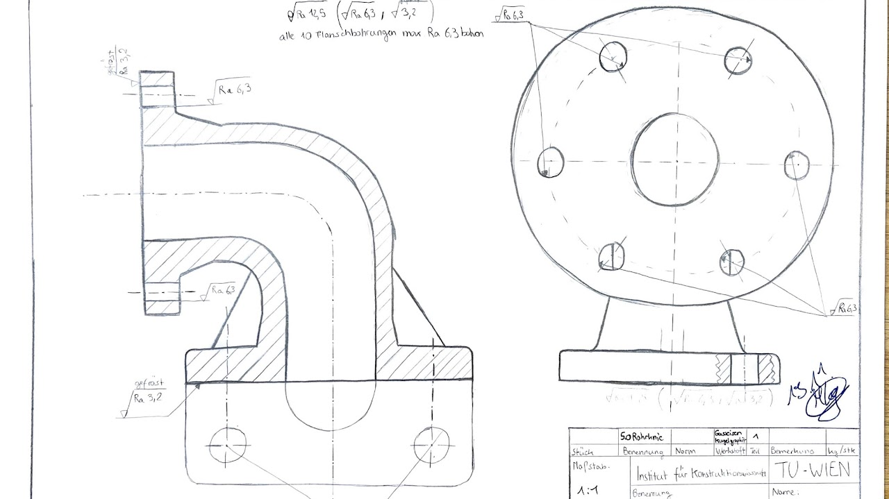
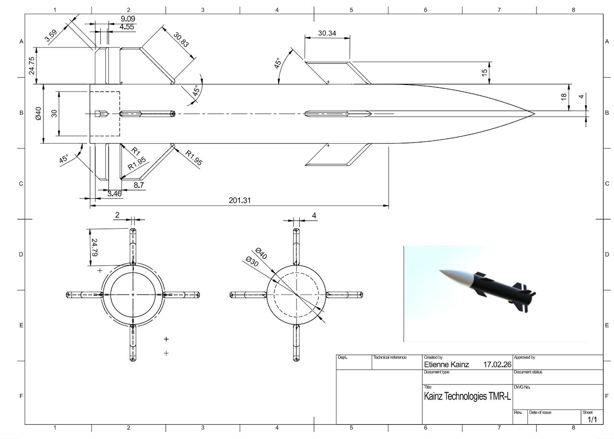
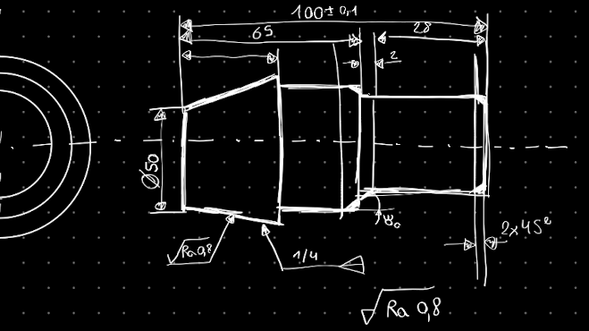
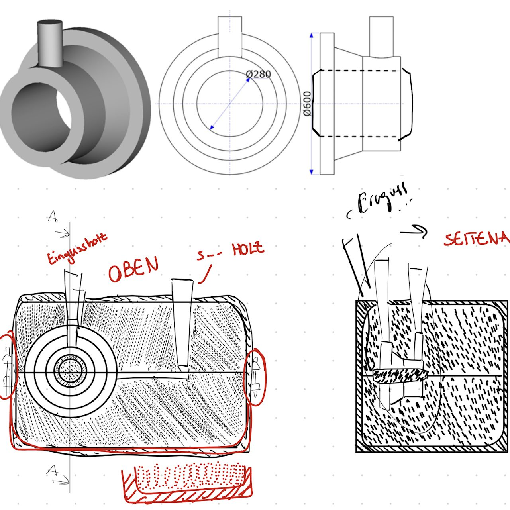
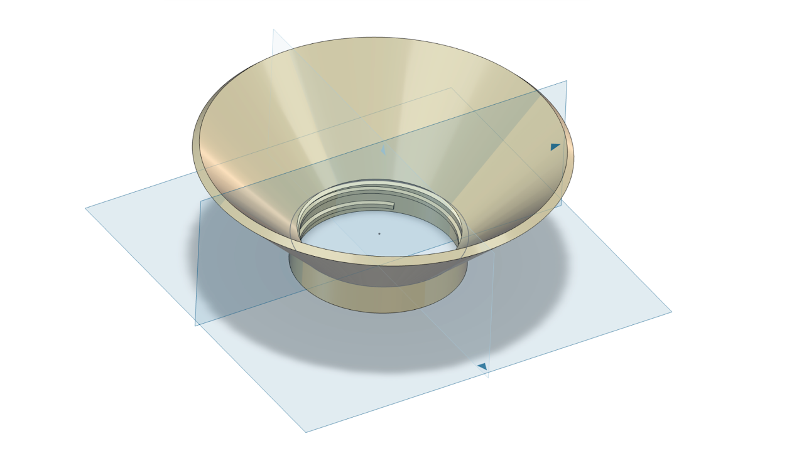
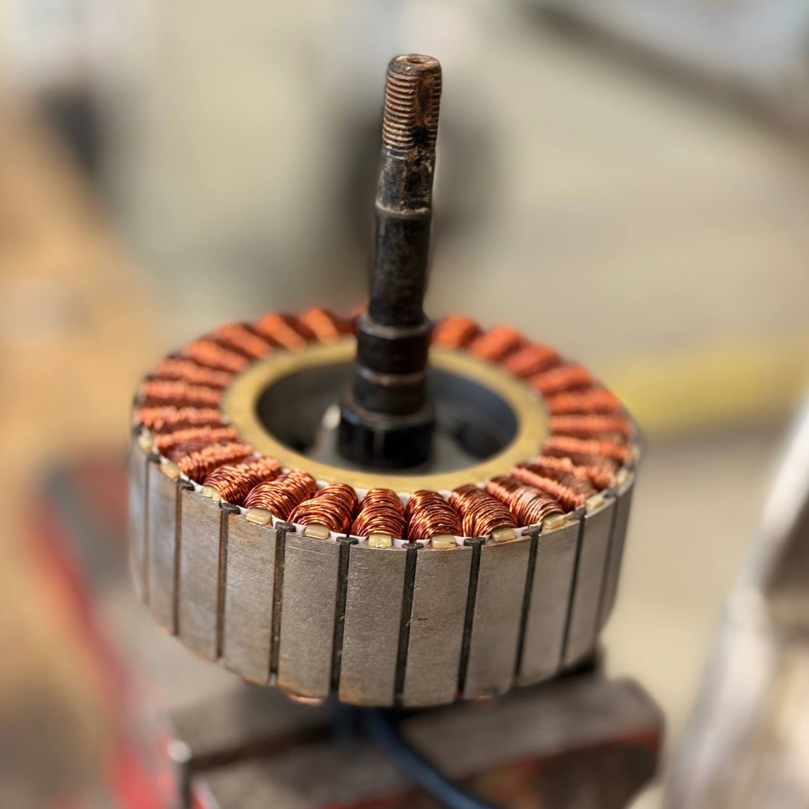
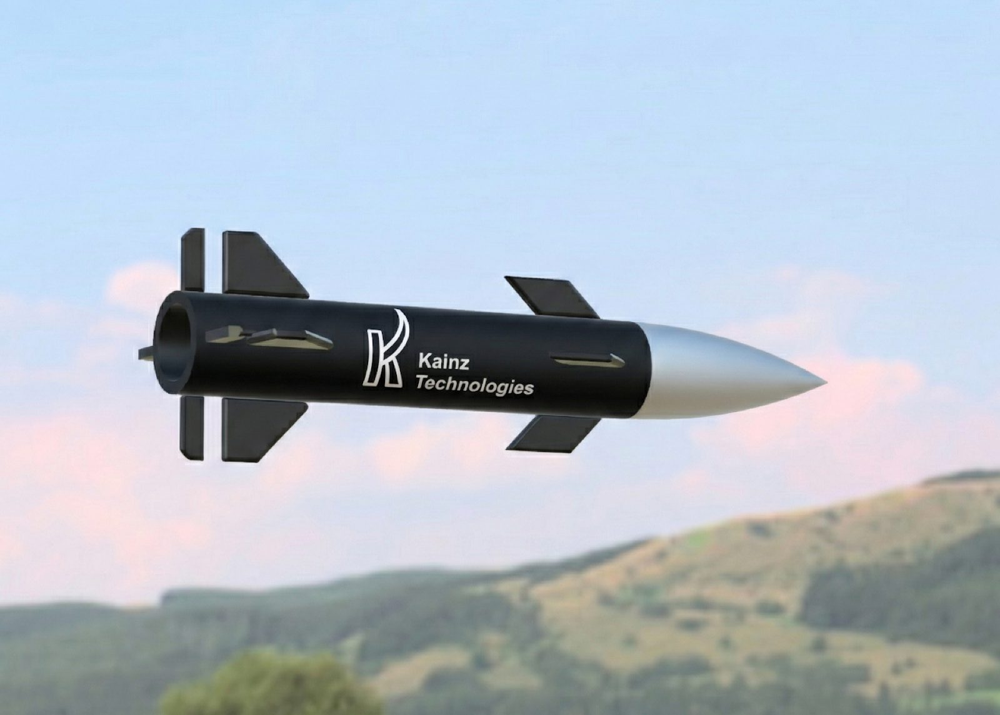
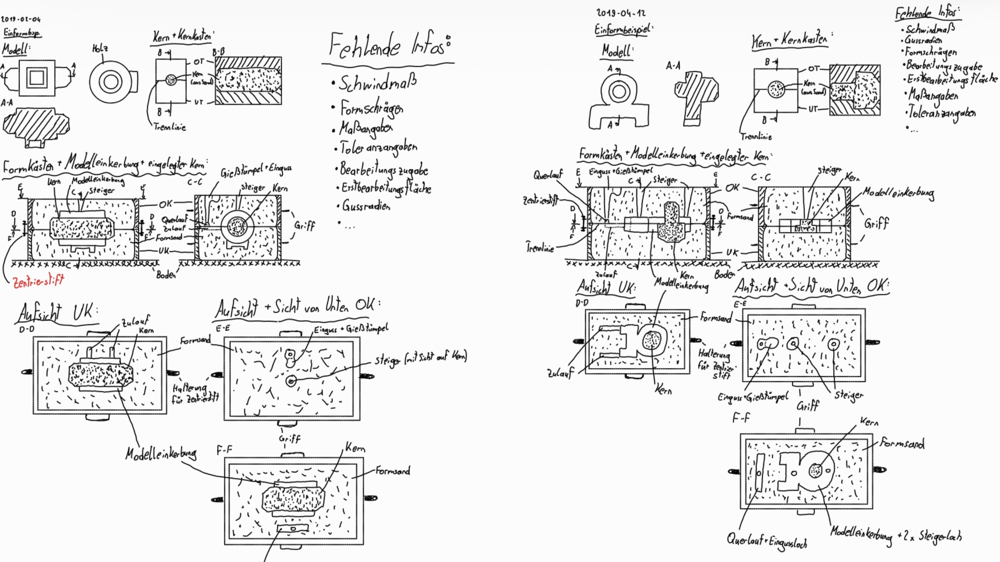
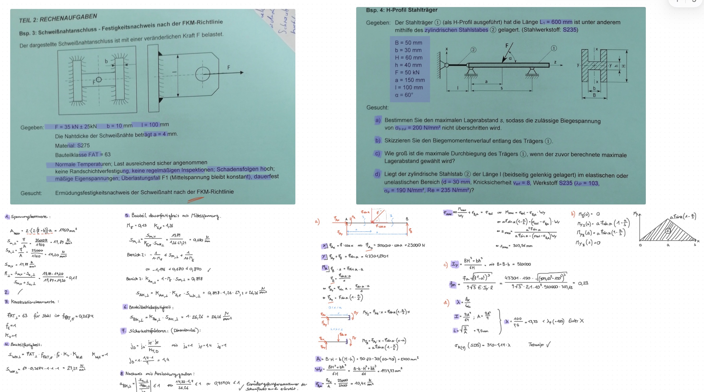